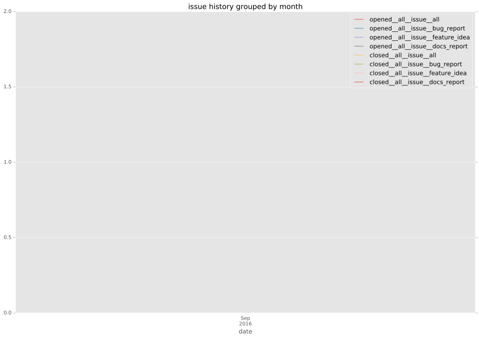
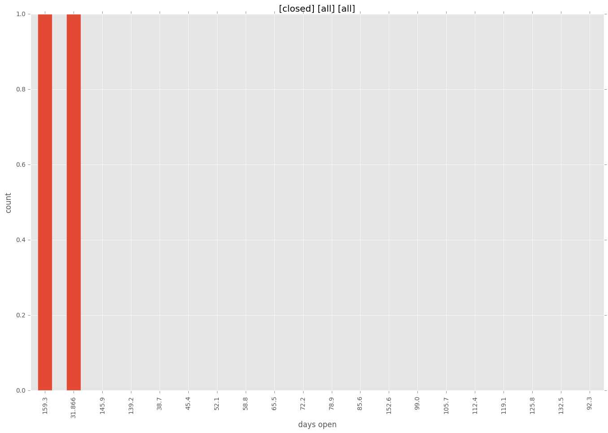
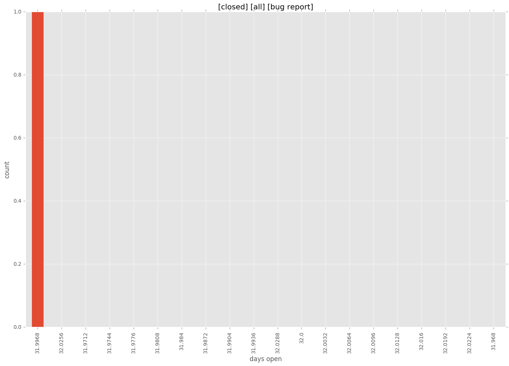
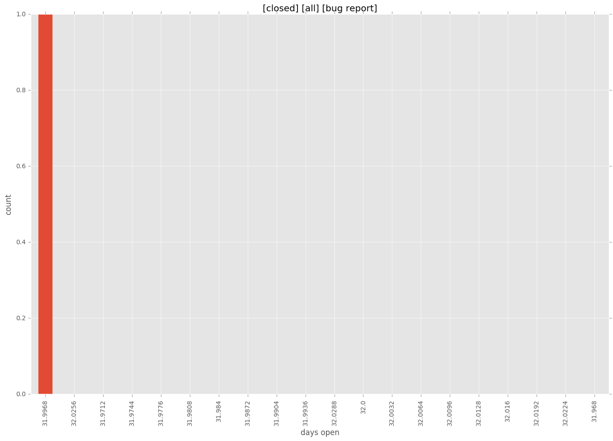
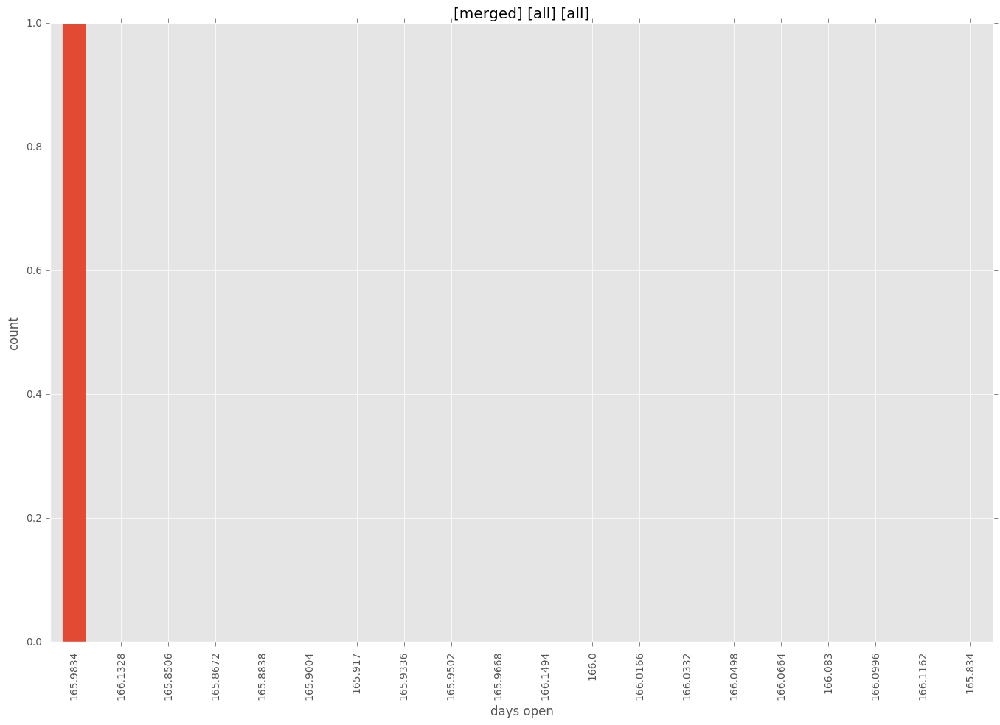
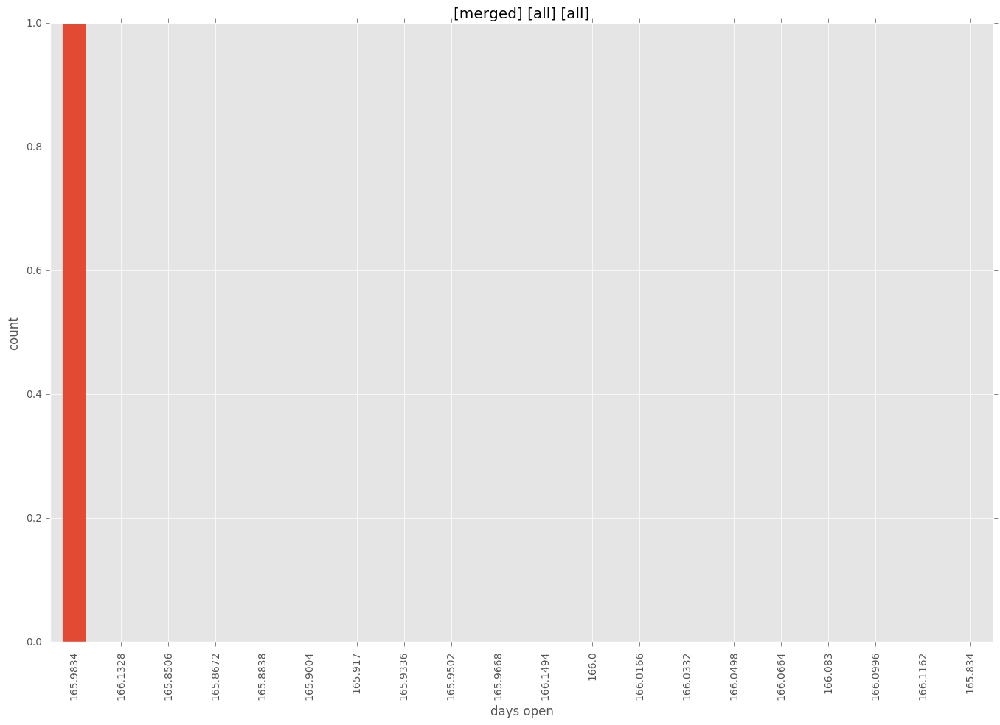

total issue counts
pullrequest: 1
issue: 2
new plugin: 1
bug report: 2
issue history

days open by issue type
all
count: 3
std: 77.3649360714
min: 32
max: 166
median: 166.0
mean: 121.333333333
pullrequest
count: 0
std: nan
min: nan
max: nan
median: nan
mean: nan
issue
count: 0
std: nan
min: nan
max: nan
median: nan
mean: nan
new plugin
count: 2
std: 0.0
min: 166
max: 166
median: 166.0
mean: 166.0
bug report
count: 1
std: nan
min: 32
max: 32
median: 32.0
mean: 32.0
closures grouped by total days open

 


 
